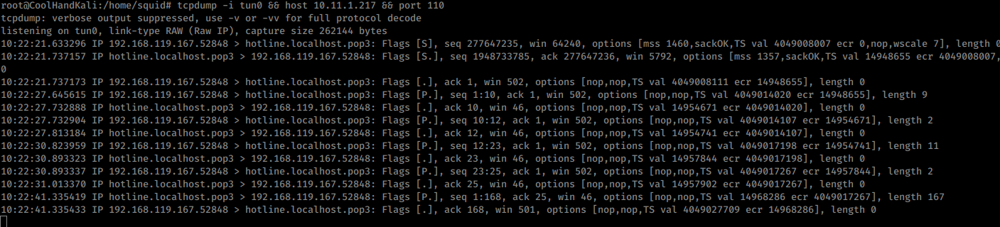
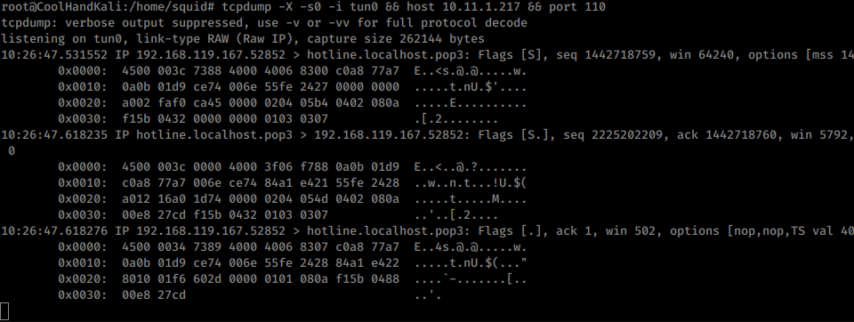
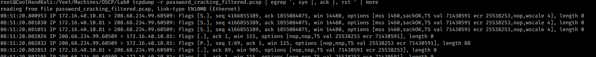
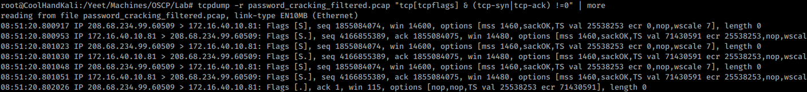

4.5.3.1 Exercises
☐ Use tcpdump to recreate the Wireshark exercise of capturing traffic on port 110.
☐ Use the -X flag to view the content of the packet. If data is truncated, investigate how the -s flag might help.
☐ Find all ‘SYN’, ‘ACK’, and ‘RST’ packets in the password_cracking_filtered.pcap file.
☐ An alternative syntax is available in tcpdump where you can use a more user-friendly filter to display only ACK and PSH packets. Explore this syntax in the tcpdump manual by searching for “tcpflags”. Come up with an equivalent display filter using this syntax to filter ACK and PSH packets.
